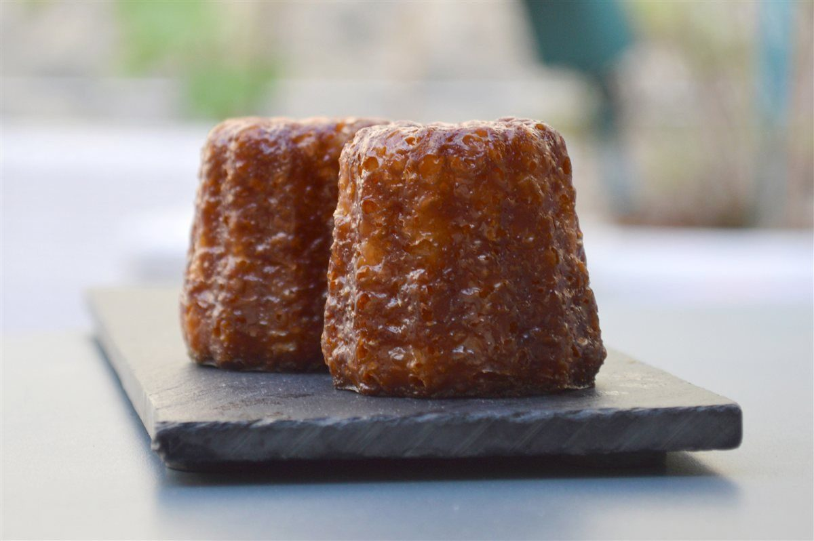
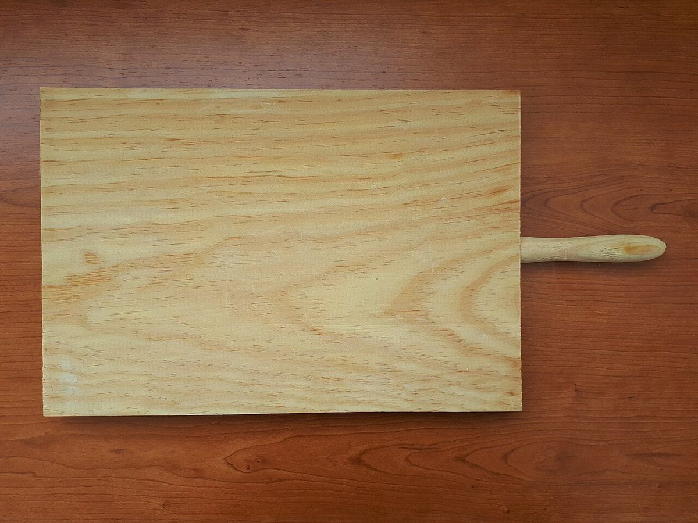
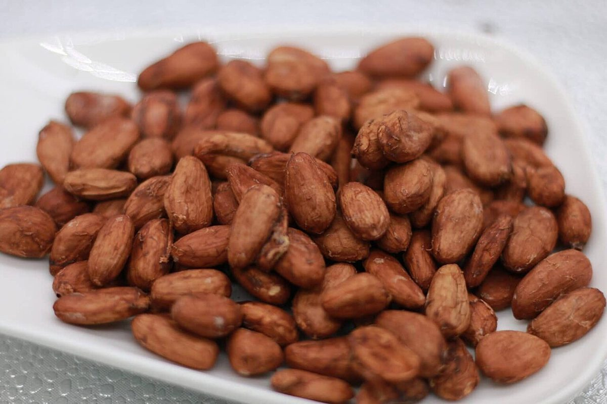
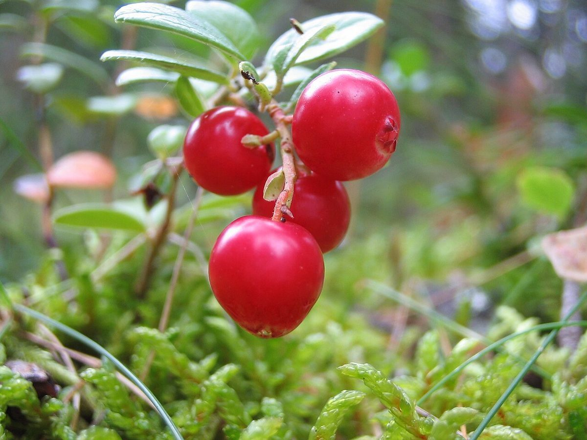

制作側の連想
恒温槽の部位を、配置図にしてみる
水を張った槽にビーカーなどを沈めて、一定の温度で温める実験器具(恒温槽)の部位を図にしたもので、制作側の連想です。お店の理念・由来とは無関係で、実際の製品の仕様を示すものでもありません。六つの部位に番号をふり、上の図と並べています。
凡例
六つの部位
- 1槽(バス)水を張る、箱形のくぼみ。ビーカーなどを沈めて、まわりから温めるところ。
- 2ふた槽の上にのせる平らな板。湯気や熱が逃げにくいよう、口をふさぐ。
- 3表示窓操作部の上にある小さな窓。いまの温度や設定した温度を数字で示す。
- 4設定ダイヤル操作部にある丸いつまみ。回して、温めたい温度を決める。
- 5排水コック本体の下のほうにある小さな栓。レバーを開けて、槽の水を抜く。
- 6脚(ゴム足)本体の底を支える足。机の上でぐらつかないよう、ゴムが付いていることが多い。
写真(イメージ)
写真(イメージ)




写真はイメージです。お店のものではありません。
ご案内
お店のこと(確認できたものだけ)
| 所在地 | 〒402-0011 山梨県都留市井倉２３４−１ |
|---|---|
| 電話 | 準備中 |
| 営業時間 | 準備中 |
| 定休日 | 準備中 |
| ご予約 | 準備中 |
| 駐車場 | 準備中 |
| SNS | Instagram @cafe_orimizu |